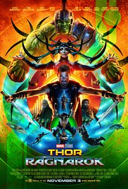

-

- Title : Deadpool
- Genres : Action | Adventure | Comedy | Romance | Sci-Fi
- Date : 10 February 2016 (UK)
- Description : A fast-talking mercenary with a morbid sense of humor is subjected to a rogue experiment that leaves him with accelerated healing powers and a quest for revenge.
-

- Title : Spider-Man Homecoming
- Genres : Action | Adventure | Sci-Fi
- Date : 5 July 2017 (UK)
- Description : Peter Parker balances his life as an ordinary high school student in Queens with his superhero alter-ego Spider-Man, and finds himself on the trail of a new menace prowling the skies of New York City.
-
 - Title : Thor: Ragnarok
- Genres : Action | Adventure | Comedy | Sci-Fi
- Date : 24 October 2017 (UK)
- Description : Imprisoned, the almighty Thor finds himself in a lethal gladiatorial contest against the Hulk, his former ally. Thor must fight for survival and race against time to prevent the all-powerful Hela from destroying his home and the Asgardian civilization.
-
- Title : The Emoji Movie
- Genres : Action | Adventure | Comedy | Family | Sci-Fi
- Date : 4 August 2017 (UK)
- Description : Gene, a multi-expressional emoji, sets out on a journey to become a normal emoji.